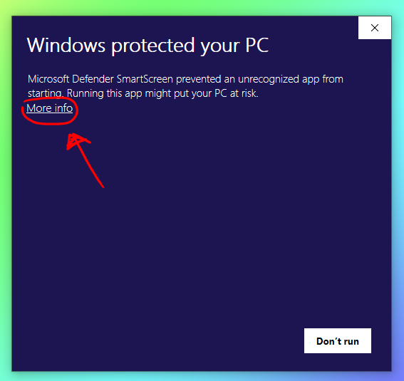
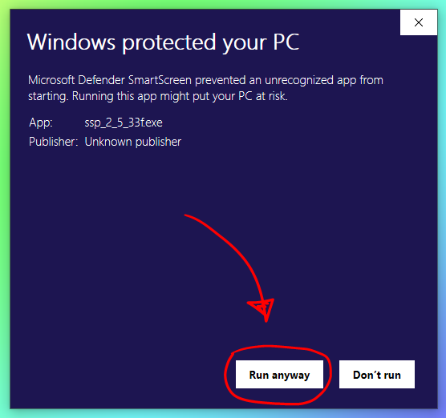
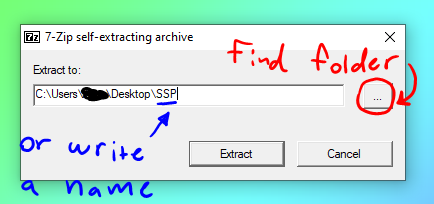
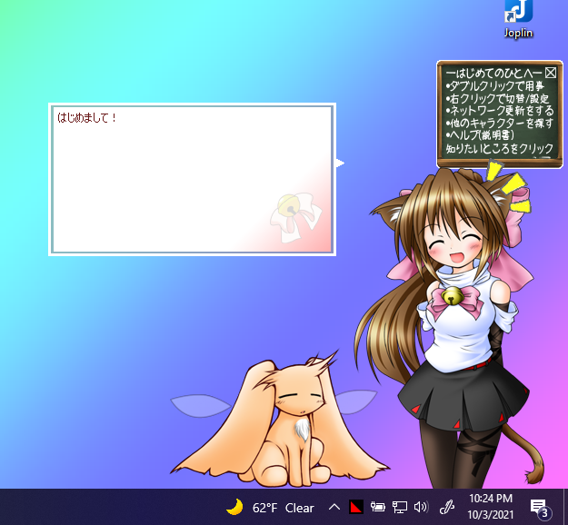
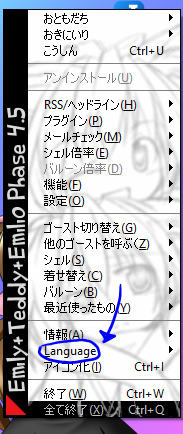
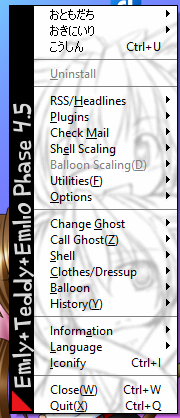

HOW TO SETUP SSP
This guide assumes you are running Windows.
- Go to the offical SSP download page (http://ssp.shillest.net/).
- Look to your left, and click the largest pink button. It will say "Complete Install Package" somewhere on it.
- Save and download to a memorable location on your computer.
- Click the file to extract it. NOTE: If you are using Windows 10 or above, Windows Defender might try to stop you from extracting the file. If this happens, on the prompt, click "More info" and then "Run anyway."
- At the prompt, chose a folder to extract the contents of the archive to or simply add to the end of the string in the text bow to have it make a folder for you.
- Click "Extract"
- Once it is finished, navigate to the folder you just extracted to. Then, click "ssp.exe"
- Congrats! Now you should have a cat girl sitting on your desktop. She is going to speak Japanese to you, and your context menu will also be in Japanese. Do not panic.
- Right click Emily, the cat girl. You will get a context menu entirely in Japanese... except for an option we will be looking for called "Language." Navigate to that.
- You will get the option of English or Japanese. Assuming since you are reading this, a guide written in English, you will want to click English. Ta-da! Your context menu should be in English now! Emily will still speak Japanese, however. This is okay.
- Congrats! You have set up SSP! Now go download a ghost of your choosing, they will typically come in .NAR files. Once you have your .NAR file, drag it over Emily and she will install it for you! After that, right click her and go to Change Ghost > [ Name of Downloaded Ghost Here ].






